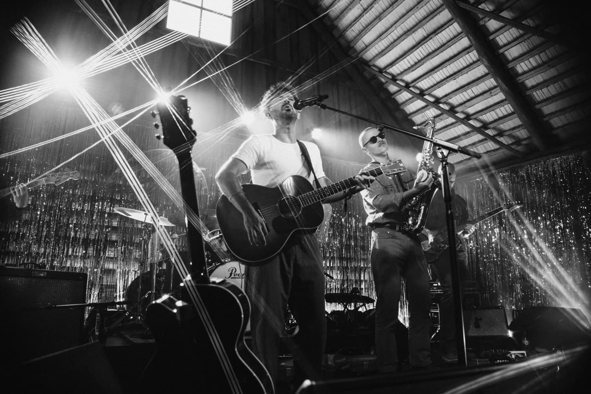
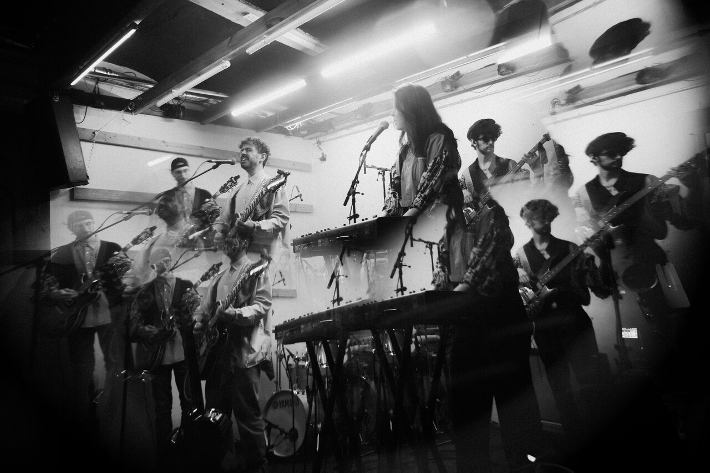
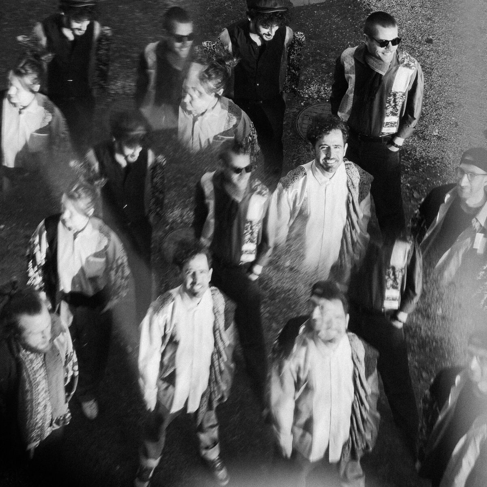

Araukaaria brings Latin American psychedelia to the Baltic: an Argentine-Estonian five-piece from Viljandi, led by Buenos Aires-born songwriter José “Pepi” Prieto. Sung in Spanish and English, the songs move from quiet, close arrangements to long electric builds, rooted in Argentine rock nacional, from Charly García to Mi Amigo Invencible, with a touch of folk.
The debut album arrives 6 February 2027.